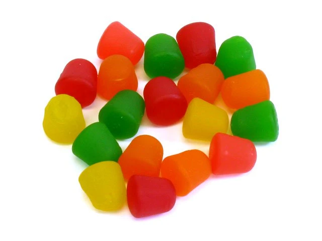

Black Licorice is Gross!

Licorice is a confection usually flavored and colored black with extract from the root of liquorice plant. Licorice is combined with anse extract to create its distinct flavor. The confection is often made into ropes, chewes, or jelly beans.
Black licorice is disgusting and should not be in production. One time I ate a black jelly bean thinking it was a different flavor. I almost died that day.